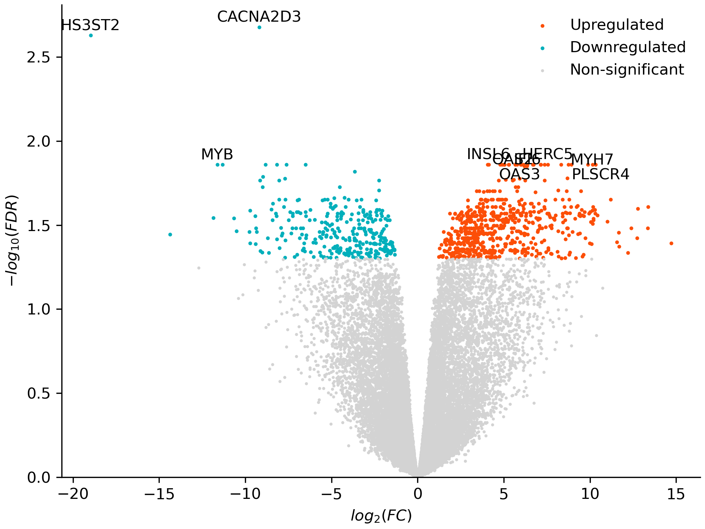

Differential Expression#
This tutorial covers pseudobulk differential expression: summing each sample’s counts into one profile per cell type, then testing genes for expression differences between conditions. It uses the same Parse Biosciences ~10 million cell PBMC dataset as the other tutorials, comparing IFN-gamma–stimulated cells against PBS controls within each cell type with limma-voom.
Loading and quality control#
Load the data and run QC as in Basic Workflow.
from brisc import SingleCell
import polars as pl
sc = SingleCell(
'Parse_10M_PBMC_cytokines.h5ad',
obs_columns=['sample', 'donor', 'cell_type', 'cytokine'])\
.qc(allow_float=True)
Pseudobulk aggregation#
pseudobulk() sums the raw counts of all cells that share a sample and cell type. Differential expression (DE) then runs on these per-sample profiles rather than on individual cells.
The result is a Pseudobulk dataset with three slots — X, obs, and var — and each slot is a dictionary keyed by cell type. For a given cell type, X is a samples × genes matrix of summed counts, obs is one metadata row per sample, and var is the gene metadata. obs adds a num_cells column and keeps the cell-level columns that are constant within each sample, such as donor and cytokine.
This layout supports two kinds of indexing. Indexing a slot by cell type, like pb.obs['CD14 Mono'], returns that cell type’s DataFrame directly; indexing the dataset itself by cell type, like pb['CD14 Mono'], returns a new Pseudobulk subset to just that cell type.
We keep only the IFN-gamma and PBS samples for DE testing.
pb = sc.pseudobulk('sample', 'cell_type')
pb = pb.filter_obs(pl.col('cytokine').is_in(['IFN-gamma', 'PBS']))
print(pb)
Pseudobulk dataset with 18 cell types, each with 22-24 samples (obs) and 40,352 genes (var)
Cell types: B Intermediate/Memory, B Naive, CD4 Memory, CD4 Naive, CD8 Memory, CD8 Naive, CD14 Mono, CD16 Mono, HSPC, ILC, MAIT, NK, NK CD56bright, NKT, Plasmablast, Treg, cDC, pDC
CD14 monocytes, for instance, have a 24 × 40,352 count matrix and one obs row per sample:
print(pb.obs['CD14 Mono'].head())
shape: (5, 4)
┌──────────────────┬───────────┬────────┬───────────┐
│ sample ┆ num_cells ┆ donor ┆ cytokine │
│ --- ┆ --- ┆ --- ┆ --- │
│ enum ┆ u32 ┆ enum ┆ enum │
╞══════════════════╪═══════════╪════════╪═══════════╡
│ Donor1_IFN-gamma ┆ 2526 ┆ Donor1 ┆ IFN-gamma │
│ Donor1_PBS ┆ 16690 ┆ Donor1 ┆ PBS │
│ Donor2_IFN-gamma ┆ 1285 ┆ Donor2 ┆ IFN-gamma │
│ Donor2_PBS ┆ 9159 ┆ Donor2 ┆ PBS │
│ Donor3_IFN-gamma ┆ 965 ┆ Donor3 ┆ IFN-gamma │
└──────────────────┴───────────┴────────┴───────────┘
IFN-gamma samples have far fewer cells than PBS samples; the log2(num_cells) covariate accounts for this in the model.
Saving the pseudobulk
A pseudobulk dataset is a compact summary, so saving it lets you re-run DE later without reloading the single-cell data. save() writes each cell type’s X, obs, and var to a directory; reload it with Pseudobulk('dir'). Pass cell_types= or excluded_cell_types= to save only some cell types.
Sample-level quality control#
qc() runs independently for each cell type, filtering out low-quality samples and genes. By default it keeps:
samples with ≥10 cells of that cell type
non-outlier samples — those whose zero-count gene total is less than 3 standard deviations above the mean
genes detected in ≥80% of samples
Passing cytokine as the group column applies the gene-detection filter within each condition — keeping a gene only if it is detected in ≥80% of samples in both IFN-gamma and PBS. Without a group column, that 80% threshold is checked across all samples pooled instead.
pb = pb.qc('cytokine')
[B Intermediate/Memory] Starting with 24 samples and 40,352 genes.
[B Intermediate/Memory] Applying the custom filter...
[B Intermediate/Memory] Filtering to samples with at least 10 B Intermediate/Memory cells...
[B Intermediate/Memory] 24 samples remain after filtering to samples with at least 10 B Intermediate/Memory cells.
[B Intermediate/Memory] Filtering to samples where the number of genes with 0 counts is <3 standard deviations above the mean...
[B Intermediate/Memory] 24 samples remain after filtering to samples where the number of genes with 0 counts is <3 standard deviations above the mean.
[B Intermediate/Memory] Filtering to genes with at least one count in 80.0% of samples in each group...
[B Intermediate/Memory] 14,696 genes remain after filtering to genes with at least one count in 80.0% of samples in each group.
...
[Plasmablast] Starting with 22 samples and 40,352 genes.
[Plasmablast] Applying the custom filter...
[Plasmablast] Filtering to samples with at least 10 Plasmablast cells...
[Plasmablast] 11 samples remain after filtering to samples with at least 10 Plasmablast cells.
[Plasmablast] Skipping this cell type because it has only 1 sample where group_column = 'IFN-gamma' after filtering, which is fewer than min_samples (2)
...
The number of genes kept therefore varies by cell type, and a rare type can drop out entirely when a condition is left with too few samples — here Plasmablast is skipped because only one IFN-gamma sample has enough cells.
Customizing the filters
Each threshold is configurable:
pb = pb.qc(
'cytokine', min_cells=20, max_standard_deviations=2,
min_nonzero_fraction=0.9, min_samples=3)
min_cells, max_standard_deviations, and min_nonzero_fraction (defaults 10, 3, and 0.8) are the three filters above; pass None to switch any off, or min_nonzero_fraction=0 to drop only all-zero genes. min_samples (default 2) sets how many samples a cell type needs to survive — the cutoff that dropped Plasmablast.
custom_filter adds an extra per-sample Boolean filter, cell_types / excluded_cell_types limit QC to some cell types, and verbose=False silences the per-step log.
Differential expression#
library_size() computes a TMM-normalized library size per sample, and DE() then fits a limma-voom model for each cell type.
The formula ~ 0 + cytokine + donor + log2(num_cells) + log2(library_size) describes each gene’s expression: cytokine is the effect of interest (the leading 0 + drops the intercept so each condition gets its own coefficient), donor accounts for the paired donors, and log2(num_cells) and log2(library_size) — recommended for every pseudobulk model — correct for the number of cells aggregated and for sequencing depth. The contrasts argument asks for the IFN-gamma minus PBS difference.
pb = pb.library_size()
de = pb.DE(
'~ 0 + cytokine + donor + log2(num_cells) + log2(library_size)',
contrasts={'IFN-gamma_vs_PBS': '`cytokineIFN-gamma` - `cytokinePBS`'},
group='cytokine',
categorical_columns=['donor', 'cytokine'])
donor and cytokine load as Enum columns, which brisc treats as ordered factors. Listing them in categorical_columns switches them to standard treatment coding, which gives the coefficients the readable names (cytokineIFN-gamma, cytokinePBS) referenced in the contrast. group='cytokine' fits the mean–variance trend separately for each condition (voomByGroup), recommended when groups differ in overall expression.
The result is a DE object whose table holds one row per gene per cell type, with the fold change, confidence interval, and corrected p-values:
print(de.table.head())
shape: (5, 11)
┌───────────────────────┬──────────────────┬──────────┬───────────┬──────────┬───────────┬───────────┬──────────┬──────────┬────────────┬──────────┐
│ cell_type ┆ coefficient ┆ gene ┆ logFC ┆ SE ┆ LCI ┆ UCI ┆ AveExpr ┆ p ┆ Bonferroni ┆ FDR │
│ --- ┆ --- ┆ --- ┆ --- ┆ --- ┆ --- ┆ --- ┆ --- ┆ --- ┆ --- ┆ --- │
│ str ┆ str ┆ str ┆ f64 ┆ f64 ┆ f64 ┆ f64 ┆ f64 ┆ f64 ┆ f64 ┆ f64 │
╞═══════════════════════╪══════════════════╪══════════╪═══════════╪══════════╪═══════════╪═══════════╪══════════╪══════════╪════════════╪══════════╡
│ B Intermediate/Memory ┆ IFN-gamma_vs_PBS ┆ DPM1 ┆ 0.222663 ┆ 0.641413 ┆ -1.138223 ┆ 1.583548 ┆ 5.572128 ┆ 0.733054 ┆ 1.0 ┆ 0.960307 │
│ B Intermediate/Memory ┆ IFN-gamma_vs_PBS ┆ SCYL3 ┆ 0.058436 ┆ 0.85565 ┆ -1.756998 ┆ 1.87387 ┆ 5.475793 ┆ 0.946406 ┆ 1.0 ┆ 0.993482 │
│ B Intermediate/Memory ┆ IFN-gamma_vs_PBS ┆ C1orf112 ┆ 0.808702 ┆ 0.780593 ┆ -0.847482 ┆ 2.464886 ┆ 5.03358 ┆ 0.31576 ┆ 1.0 ┆ 0.879665 │
│ B Intermediate/Memory ┆ IFN-gamma_vs_PBS ┆ FGR ┆ -3.817447 ┆ 1.210963 ┆ -6.386748 ┆ -1.248147 ┆ 3.942816 ┆ 0.006227 ┆ 1.0 ┆ 0.694034 │
│ B Intermediate/Memory ┆ IFN-gamma_vs_PBS ┆ FUCA2 ┆ -0.737734 ┆ 1.348779 ┆ -3.599441 ┆ 2.123972 ┆ 3.232465 ┆ 0.592028 ┆ 1.0 ┆ 0.946363 │
└───────────────────────┴──────────────────┴──────────┴───────────┴──────────┴───────────┴───────────┴──────────┴──────────┴────────────┴──────────┘
Coefficient names
Coefficient names come from R’s model.matrix. A treatment-coded factor (one listed in categorical_columns) names each level <column><level> — e.g. cytokineIFN-gamma. With an intercept the factor’s first level is the reference and is folded into it; with ~ 0 + ... (no intercept) the first factor keeps every level, which is why the cell-means model above has both cytokinePBS and cytokineIFN-gamma. Continuous terms keep their formula text (log2(num_cells)), and a bare Enum not in categorical_columns becomes ordered, giving polynomial names like cytokine.L.
Reference coding instead of contrasts
The same IFN-gamma-vs-PBS comparison can be expressed without contrasts. Recode cytokine as a two-level factor with PBS as the reference (first) level; then ~ cytokine makes the cytokineIFN-gamma coefficient itself the IFN-gamma-vs-PBS effect, which you report directly with coefficient=:
pb = pb.with_columns_obs(
cytokine=pl.col('cytokine').cast(pl.Enum(['PBS', 'IFN-gamma'])))
pb = pb.library_size(overwrite=True)
de = pb.DE(
'~ cytokine + donor + log2(num_cells) + log2(library_size)',
coefficient='cytokineIFN-gamma',
group='cytokine',
categorical_columns=['donor', 'cytokine'])
Other DE options
group=Falseuses a single mean–variance trend (plain voom) rather than voomByGroup.robust=Truemakes the empirical Bayes step robust to outlier samples.strict=Trueerrors on any cell type whose design matrix is rank-deficient or has too few samples to fit its coefficients — by default these cell types are silently skipped.return_voom_info=Falseskips storing the voom weights and plot data, for lower memory and runtime when you don’t need them.cell_types/excluded_cell_typesrestrict testing to a subset of cell types.formula— and likewisecoefficient,contrasts, andgroup— can be a dict keyed by cell type, for per-cell-type designs (e.g. a covariate present in only some).
Exploring the results#
get_num_hits() counts the significant genes (FDR < 0.05) in each cell type; cell types with no hits are omitted.
print(de.get_num_hits())
shape: (5, 2)
┌───────────────────────┬──────────┐
│ cell_type ┆ num_hits │
│ --- ┆ --- │
│ str ┆ u32 │
╞═══════════════════════╪══════════╡
│ B Intermediate/Memory ┆ 1 │
│ B Naive ┆ 419 │
│ CD14 Mono ┆ 921 │
│ CD16 Mono ┆ 1242 │
│ pDC ┆ 8 │
└───────────────────────┴──────────┘
The monocytes and B cells respond most strongly, as expected for IFN-gamma; the other tested cell types show no hits at this threshold.
get_hits() returns the hits themselves; num_top_hits caps how many it reports per cell type.
print(de.get_hits(num_top_hits=5))
shape: (21, 11)
┌───────────────────────┬──────────────────┬──────────┬───────────┬──────────┬───────────┬───────────┬──────────┬──────────┬────────────┬──────────┐
│ cell_type ┆ coefficient ┆ gene ┆ logFC ┆ SE ┆ LCI ┆ UCI ┆ AveExpr ┆ p ┆ Bonferroni ┆ FDR │
│ --- ┆ --- ┆ --- ┆ --- ┆ --- ┆ --- ┆ --- ┆ --- ┆ --- ┆ --- ┆ --- │
│ str ┆ str ┆ str ┆ f64 ┆ f64 ┆ f64 ┆ f64 ┆ f64 ┆ f64 ┆ f64 ┆ f64 │
╞═══════════════════════╪══════════════════╪══════════╪═══════════╪══════════╪═══════════╪═══════════╪══════════╪══════════╪════════════╪══════════╡
│ B Intermediate/Memory ┆ IFN-gamma_vs_PBS ┆ TENM4 ┆ -6.541455 ┆ 0.932481 ┆ -8.5199 ┆ -4.563009 ┆ 5.045181 ┆ 0.000003 ┆ 0.045421 ┆ 0.045421 │
│ B Naive ┆ IFN-gamma_vs_PBS ┆ LAP3 ┆ 7.407232 ┆ 1.310548 ┆ 4.623667 ┆ 10.190797 ┆ 7.001164 ┆ 0.000039 ┆ 0.59715 ┆ 0.00686 │
│ B Naive ┆ IFN-gamma_vs_PBS ┆ CASP10 ┆ 5.912959 ┆ 1.276394 ┆ 3.201936 ┆ 8.623982 ┆ 6.22115 ┆ 0.000293 ┆ 1.0 ┆ 0.021485 │
│ B Naive ┆ IFN-gamma_vs_PBS ┆ CFLAR ┆ 3.227135 ┆ 0.690015 ┆ 1.761564 ┆ 4.692705 ┆ 8.286078 ┆ 0.000268 ┆ 1.0 ┆ 0.020962 │
│ B Naive ┆ IFN-gamma_vs_PBS ┆ NFIX ┆ 4.034178 ┆ 0.959142 ┆ 1.996989 ┆ 6.071367 ┆ 3.726182 ┆ 0.000702 ┆ 1.0 ┆ 0.034705 │
│ B Naive ┆ IFN-gamma_vs_PBS ┆ REV3L ┆ -2.426383 ┆ 0.598103 ┆ -3.696736 ┆ -1.15603 ┆ 7.312945 ┆ 0.000956 ┆ 1.0 ┆ 0.040087 │
│ CD14 Mono ┆ IFN-gamma_vs_PBS ┆ CFH ┆ 8.41647 ┆ 1.744176 ┆ 4.629897 ┆ 12.203043 ┆ 3.082947 ┆ 0.000378 ┆ 1.0 ┆ 0.028114 │
│ CD14 Mono ┆ IFN-gamma_vs_PBS ┆ LAP3 ┆ 5.340517 ┆ 0.984571 ┆ 3.203031 ┆ 7.478003 ┆ 9.694517 ┆ 0.000137 ┆ 1.0 ┆ 0.024299 │
│ CD14 Mono ┆ IFN-gamma_vs_PBS ┆ HS3ST1 ┆ -6.472272 ┆ 1.52021 ┆ -9.772619 ┆ -3.171925 ┆ 2.661385 ┆ 0.001035 ┆ 1.0 ┆ 0.037717 │
│ CD14 Mono ┆ IFN-gamma_vs_PBS ┆ CASP10 ┆ 3.927577 ┆ 0.694199 ┆ 2.420484 ┆ 5.434671 ┆ 6.461136 ┆ 0.000094 ┆ 1.0 ┆ 0.022213 │
│ CD14 Mono ┆ IFN-gamma_vs_PBS ┆ CD38 ┆ 9.55195 ┆ 1.940199 ┆ 5.339815 ┆ 13.764086 ┆ 8.810696 ┆ 0.000319 ┆ 1.0 ┆ 0.027588 │
│ CD16 Mono ┆ IFN-gamma_vs_PBS ┆ C1orf112 ┆ -1.851876 ┆ 0.496937 ┆ -2.910966 ┆ -0.792787 ┆ 4.496459 ┆ 0.002022 ┆ 1.0 ┆ 0.032473 │
│ CD16 Mono ┆ IFN-gamma_vs_PBS ┆ GCLC ┆ 2.931873 ┆ 0.673918 ┆ 1.495595 ┆ 4.368152 ┆ 7.405133 ┆ 0.000569 ┆ 1.0 ┆ 0.017878 │
│ CD16 Mono ┆ IFN-gamma_vs_PBS ┆ LAP3 ┆ 2.727377 ┆ 0.451244 ┆ 1.765669 ┆ 3.689084 ┆ 9.924472 ┆ 0.000022 ┆ 0.313044 ┆ 0.005159 │
│ CD16 Mono ┆ IFN-gamma_vs_PBS ┆ TMEM176A ┆ 1.858929 ┆ 0.472315 ┆ 0.852313 ┆ 2.865544 ┆ 4.429607 ┆ 0.001319 ┆ 1.0 ┆ 0.026377 │
│ CD16 Mono ┆ IFN-gamma_vs_PBS ┆ CASP10 ┆ 1.477641 ┆ 0.385716 ┆ 0.655589 ┆ 2.299694 ┆ 6.820638 ┆ 0.001633 ┆ 1.0 ┆ 0.029325 │
│ pDC ┆ IFN-gamma_vs_PBS ┆ CALCRL ┆ 2.570484 ┆ 0.371683 ┆ 1.757332 ┆ 3.383635 ┆ 7.461197 ┆ 0.000019 ┆ 0.189731 ┆ 0.035574 │
│ pDC ┆ IFN-gamma_vs_PBS ┆ CD83 ┆ 2.328595 ┆ 0.340925 ┆ 1.582735 ┆ 3.074455 ┆ 7.666968 ┆ 0.000022 ┆ 0.213442 ┆ 0.035574 │
│ pDC ┆ IFN-gamma_vs_PBS ┆ IFIT2 ┆ 2.561409 ┆ 0.373712 ┆ 1.743818 ┆ 3.379001 ┆ 6.730806 ┆ 0.000021 ┆ 0.206565 ┆ 0.035574 │
│ pDC ┆ IFN-gamma_vs_PBS ┆ GBP5 ┆ 4.729849 ┆ 0.597065 ┆ 3.423617 ┆ 6.036082 ┆ 6.351485 ┆ 0.000005 ┆ 0.050837 ┆ 0.016946 │
│ pDC ┆ IFN-gamma_vs_PBS ┆ CXCL10 ┆ 5.11896 ┆ 0.775682 ┆ 3.421958 ┆ 6.815962 ┆ 6.030659 ┆ 0.00003 ┆ 0.294685 ┆ 0.037911 │
└───────────────────────┴──────────────────┴──────────┴───────────┴──────────┴───────────┴───────────┴──────────┴──────────┴────────────┴──────────┘
Classic interferon-response genes recur across cell types — LAP3, GBP5, IFIT2, and CXCL10 are all canonical IFN-gamma targets.
plot_volcano() plots fold change against significance for one cell type. CD14 monocytes mount one of the strongest responses to IFN-gamma:
de.plot_volcano('CD14 Mono', 'volcano.png', significance_column='FDR',
ylabel='$-log_{10}(FDR)$')
{kind=link}

Other result options
plot_voom()draws the mean–variance trend that voom fits, with one curve per group (when using voomByGroup).significance_column='Bonferroni'or a lowerthresholdinget_hitsandplot_volcanogives a stricter cut.save()writes the results (and voom info) to a directory; reload them later withDE('dir').
Pipeline summary#
The full differential expression pipeline:
from brisc import SingleCell
import polars as pl
sc = SingleCell(
'Parse_10M_PBMC_cytokines.h5ad', num_threads=-1,
obs_columns=['sample', 'donor', 'cell_type', 'cytokine'])\
.qc(allow_float=True)
pb = sc.pseudobulk('sample', 'cell_type')\
.filter_obs(pl.col('cytokine').is_in(['IFN-gamma', 'PBS']))\
.qc('cytokine')\
.library_size()
de = pb.DE(
'~ 0 + cytokine + donor + log2(num_cells) + log2(library_size)',
contrasts={'IFN-gamma_vs_PBS': '`cytokineIFN-gamma` - `cytokinePBS`'},
group='cytokine',
categorical_columns=['donor', 'cytokine'])
de.plot_volcano('CD14 Mono', 'volcano.png', significance_column='FDR',
ylabel='$-log_{10}(FDR)$')
Step |
Method |
What it does |
|---|---|---|
Load |
Read data from any supported format |
|
Quality control |
Filter low-quality cells |
|
Pseudobulk |
Sum raw counts per sample × cell type |
|
Sample QC |
Filter low-quality samples and genes per group |
|
Library size |
Compute TMM-normalized library sizes |
|
Differential expression |
Fit a limma-voom model per cell type |
|
Volcano plot |
Plot fold change against significance for one cell type |